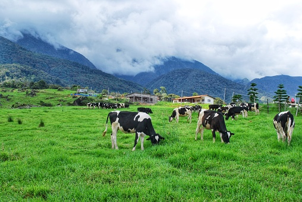

Informasi peternakan, populasi ternak, kelompok peternak dan hasil produksi Desa Suntenjaya.

Informasi populasi ternak, kelompok peternak, serta hasil produksi peternakan.
Komoditas peternakan yang banyak dibudidayakan masyarakat.
Kandang masyarakat tersebar di seluruh wilayah desa untuk menunjang kegiatan peternakan.
Kelompok peternak aktif dalam meningkatkan kualitas usaha peternakan masyarakat.
Peternakan merupakan salah satu sektor penting yang memberikan kontribusi terhadap perekonomian masyarakat Desa Suntenjaya.
| Peternak Aktif | 175 Orang |
| Produksi Susu | 850 Liter/Hari |
| Harga Susu | Rp7.500/Liter |
| Perkiraan Nilai Produksi | ± Rp2.326.875.000/Tahun |
Pendapatan masyarakat berasal dari penjualan susu, sapi potong, kambing, domba, dan ayam kampung.
| Jenis Ternak | Populasi | Produksi | Pendapatan |
|---|---|---|---|
| Sapi Perah | 420 Ekor | 850 Liter/Hari | Rp2.326.875.000 |
| Sapi Potong | 150 Ekor | 80 Ekor/Tahun | Rp1.600.000.000 |
| Kambing | 610 Ekor | 220 Ekor/Tahun | Rp880.000.000 |
| Domba | 500 Ekor | 180 Ekor/Tahun | Rp720.000.000 |
| Ayam Kampung | 2500 Ekor | 2000 Ekor/Tahun | Rp500.000.000 |
| Total | 4.180 Ekor | - | Rp6.026.875.000 |
Kondisi geografis Desa Suntenjaya sangat mendukung pengembangan usaha peternakan, terutama sapi perah, karena memiliki suhu yang sejuk serta ketersediaan hijauan pakan ternak yang melimpah.
Hasil peternakan dipasarkan ke wilayah Lembang, Bandung Barat, Kota Bandung hingga beberapa daerah lain di Jawa Barat.
Sapi perah merupakan komoditas utama peternakan Desa Suntenjaya dengan produksi sekitar 850 liter susu setiap hari. Selain sapi perah, masyarakat juga mengembangkan sapi potong, kambing, domba, dan ayam kampung yang menjadi sumber pendapatan tambahan masyarakat desa.